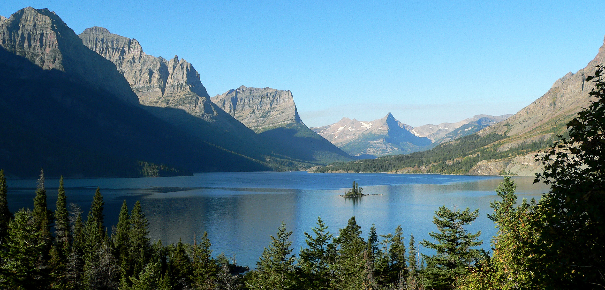
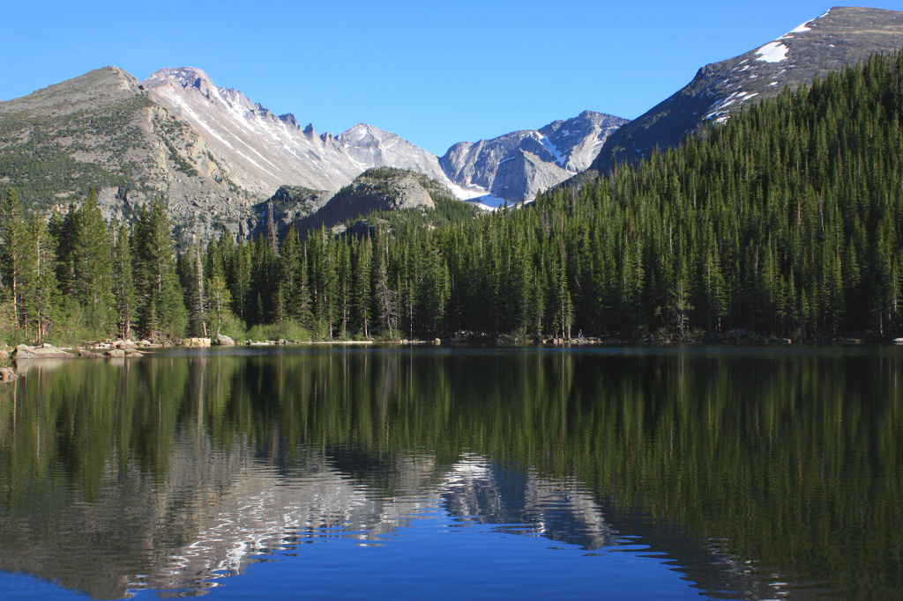
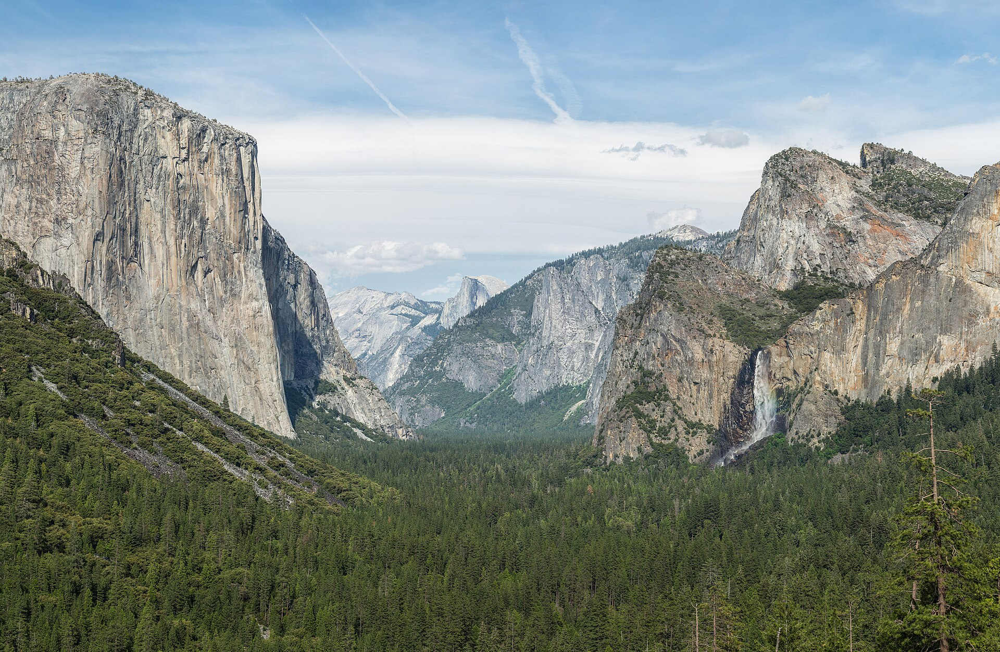

My Photos
This is my list of favorite National Parks to fish in:
- Glacier NP (Montana)
- Rocky Mountain NP (Colorado)
- Yellowstone NP (Wyoming)
- Yosemite NP (California)
- Zion NP (Utah)

1. Glacier NP (Montana)

2. Rocky Mountain NP (Colorado)

3. Yellowstone NP (Wyoming)

4. Yosemite NP (California)
5. Zion NP (Utah)